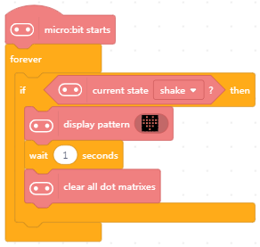
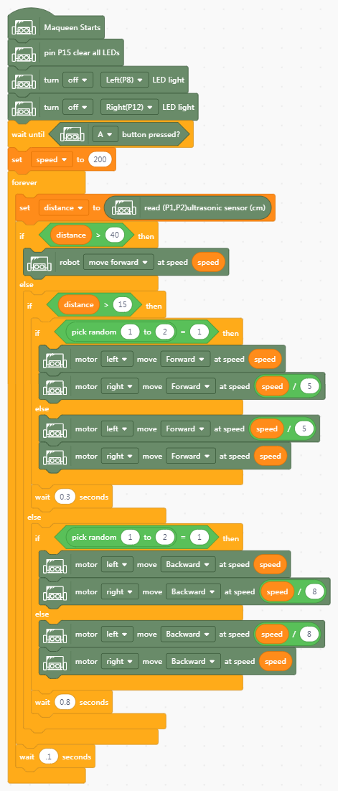
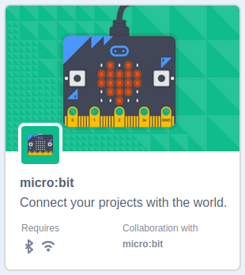

risorse | mbot vs. micro:maqueen
ATTENZIONE! Ho posto la massima cura ed attenzione nel redigere questi appunti; declino tuttavia ogni responsabilità per eventuali imprecisioni, errori od omissioni, così come declino ogni responsabilità per eventuali danni a cose, proprietà o persone derivanti dall’uso di questi contenuti.
Le considerazioni qui sotto rispecchiano lo stato delle cose a gennaio 2020. Considerando l'evoluzione degli strumenti software analizzati è assai probabile che diverranno obsolete entro poche settimane, al più mesi.
Vai direttamente alle conclusioni.
In questi ultimi mesi ho condotto un paio di RoboDojo (ne parlo ad esempio qui e qui) avendo avuto la fortuna di poter disporre di una dozzina di mBot che vengono spesso usati allo stesso scopo da altre persone in contesti diversi. Nel tempo alcuni di essi sono diventati inutilizzabili a causa dell'imperizia di qualche partecipante troppo irruento o un poco distratto (viti spanate, connessioni strappate, sensori smarriti, …). Ho deciso allora di valutare la possibilità di usare un robot diverso, più economico, per minimizzare i costi di riparazione e sostituzione. La scelta è ricaduta su micro:Maqueen.
micro:Maqueen è un robot giocattolo prodotto e distribuito dall'azienda cinese DFRobot. È basato sulla scheda micro:bit, da cui il nome. Le sue caratteristiche sono paragonabili a quelle di mBot; si differenzia da questo per il costo ridotto e il montaggio semplificato, richiedendo solo l'assemblaggio delle ruote e del pacco batterie. Anche la modalità di programmazione è simile.
micro:Maqueen: notare la scheda micro:bit, il cervello del robot
L'assemblaggio si completa in pochi semplici passaggi:
ATTENZIONE! Prima di inserire micro:bit in micro:Maqueen assicurarsi che entrambi i dispositivi siano spenti.
I due robot, sebbene basati su due schede differenti, presentano caratteristiche molto simili:
| mBot | micro:Maqueen | ||
|---|---|---|---|
| Principale | |||
| Scheda di controllo | mCore (Arduino) | micro:bit | |
| Scocca | Alluminio | Bachelite | |
| Dimensioni | 170×130×90 mm | 81×85×44 mm | |
| Peso | 400 g | 75 g | |
| Alimentazione | LiPo/4 stilo AA | 3 mini stilo AAA | |
| Tempo di assemblaggio | 30/40 min | 2 min | |
| Prezzo indicativo | 100€ | 40€ | |
| Processore | |||
| CPU | ATmega328P | nRF51822 | |
| Frequenza | 16MHz | 16MHz | |
| Memoria | |||
| Memoria Flash | 32KB | 256KB | |
| RAM Statica | 2KB | 16KB | |
| EEPROM | 1KB | - | |
| I/O | |||
| Pin digitali | 14 (6 PWM) | 6/17 (2/3 PWM) (1) | |
| Pin analogici | 6 | 6 | |
| Interfaccia USB | Sì (A) | Sì (Micro B) | |
| Interfaccia Seriale | Sì | Sì | |
| Interfaccia SPI | Sì | Sì | |
| Interfaccia I2C | Sì | Sì | |
| Tecnologia Wireless | Bluetooth/WiFi | Bluetooth, Radio | |
| Porte di espansione | 4 RJ25 | 2 servo | |
| Pulsanti | |||
| Reset | Sì | Sì | |
| Generici | 1 | 2 | |
| LED | |||
| LED | 2 RGB | 2 rossi + 4 RGB (2) | |
| I/R | 1 | 1 (2) | |
| Display | - | Matrice LED 5×5 | |
| Attuatori | |||
| Buzzer | Sì | Sì (2) | |
| Driver motori CC | 2 | 2 (2) | |
| Sensori | |||
| Sensore di luminosità | Sì | Sì | |
| Sensore di temperatura | No | Sì | |
| Accelerometero | No | Sì | |
| Magnetometro | No | Sì | |
| Sensore ultrasonico | Sì | Si | |
| Sensore di linea | Sì | Si | |
(1) il numero di pin disponibili dipende dalla configurazione.
(2) il componente si trova su micro:maqueen, non su micro:bit.
Una sostanziale differenza tra mBot e micro:Maqueen riguarda la disponibilità di sensori e attuatori accessori: per il primo l'elenco è molto lungo, e comprende sensori di umidità, temperatura, gas, … e attuatori come joystick, potenziometri, pinze, … collegabili alle porte di espansione RJ25 di mCore. Non mancano poi le estensioni strutturali, come ad esempio il modulo “Six-legged Robot” che trasforma mBot in un robot esapode.
Così come mBot ha un ambiente di programmazione dedicato, mBlock, così micro:Maqueen, per il quale è stato creato Mind+. Entrambi consentono di operare secondo due modalità:
Entrambi gli ambienti di sviluppo si presentano sotto due forme:
L'utilizzo delle applicazioni Web necessita solo di un web browser sufficientemente moderno, mentre le versioni Desktop potrebbero non essere disponibili su alcuni sistemi operativi (tipicamente Linux).
Generalmente questi ambienti di sviluppo offrono la possibilità di sviluppare i programmi secondo due paradigmi: quello grafico, basato sui blocchi, adatto ai principianti, ed uno più tradizionale, basato sulla scrittura di codice convenzionale usando linguaggi di programmazione come C++, JavaScript o Python.
La tabella raccoglie le principali applicazioni online che possono essere utilizzate per programmare i due robot. Necessitano di una connessione internet e l'installazione di un Web device driver, un componente software che permette all'applicazione web di comunicare con la scheda di controllo.
| Nome | Linguaggi | Driver | Live | Upload | Windows | Mac | Linux | ||
|---|---|---|---|---|---|---|---|---|---|
| mBot | |||||||||
| mBlock | Blocchi, C | mLink | Sì | Sì | 7/8/10 (64 bit) | 10.10 | 64 bit | vai | |
| micro:Maqueen | |||||||||
| Mind+ | Blocchi, C | Mind+ Link | Sì (1) | Sì | 7/8/10 | 10.11+ | No | vai | |
| MakeCode | Blocchi, JavaScript | - | No | Sì (2) | - | - | - | vai | |
| Scratch | Blocchi | Scratch Link | Sì (3) | No | 10 v. 1709+ | 10.13+ | No | vai | |
(1) Mind+ carica autonomamente il firmware adatto sulla scheda micro:bit subito dopo la connessione.
(2) Il programma va scaricato (file .hex) e copiato su micro:bit. Richiede il caricamento dell'estensione “maqueen”.
(3) Scratch supporta solo micro:bit con firmware dedicato a bordo (una copia locale è disponibile qui).
micro:bit può essere programmato pure in Python (esiste un Editor Online ufficialmente supportato). Non è escluso che attraverso questa modalità sia possibile estendere il controllo ai sensori e attuatori di micro:Maqueen posto che è noto lo schema di collegamento ai pin di micro:bit (vedi appendice).
micro:bit è programmabile anche in C/C++, ma la predisposizione dell'ambiente di sviluppo in questo caso non è per nulla banale. In rete ci sono molti riferimenti, uno su tutti la pagina di istruzioni curata dalla Lancaster University.
Nessuna delle versioni più recenti degli ambienti di sviluppo Desktop funziona su Linux. L'ultima per mBot è mBlock v. 4.x, mentre non ne esiste una per micro:bit – men che meno per micro:Maqueen. Per questa ragione la tabella sottostante manca della colonna associata a questo sistema operativo:
| Nome | Versione | Linguaggi | Driver | Live | Upload | Windows | Mac | ||
|---|---|---|---|---|---|---|---|---|---|
| mBot | |||||||||
| mBlock 5 (1) | 5.1.0 | Blocchi, C | integrato | Sì | Sì | 7/10 (64 bit) | 10.10+ | scarica | |
| micro:Maqueen | |||||||||
| Mind+ | 1.6.1 | Blocchi, C | integrato | Sì | Sì | 7/8/10 | 10.11+ | scarica | |
| MakeCode (2) | 5.15.13 | Blocchi, JavaScript | integrato | No | Sì | 10 v. 10240.0+ | N.D. | installa | |
| Scratch (3) | 3.6.0 | Blocchi | Scratch Link | Sì | No | 10 v. 1709+ | 10.13+ | scarica | |
(1) La versione offline di mBlock supporta pure micro:bit.
(2) L'installazione della versione scaricabile dalla dalla pagina ufficiale causa l'errore Impossibile eseguire questa app nel tuo PC, quella disponibile nello Store invece funziona regolarmente.
(3) A causa di un baco, per rendere operativo il programma occorre procedere come indicato qui (verificato).
Mind+ è l'ambiente di sviluppo ufficiale di micro:Maqueen. Essendo basato su Scratch 3, il suo aspetto risulta di certo familiare a chi ha già usato il famoso editor. Al primo avvio il programma si presenta in cinese; per cambiare la lingua basta cliccare l'icona a forma di ruota dentata in alto a destra e selezionare quella desiderata. Purtroppo l'italiano non è ancora disponibile.
Sul sito ufficiale di Mind+ si trova molta documentazione – tutta in lingua inglese – sia riguardo a micro:bit che specifica di micro:Maqueen.
Per programmare micro:Maqueen è necessario innanzitutto installare i driver per la comunicazione con la scheda di controllo del robot (menu Connect Device → Install SerialPort Driver). È un'operazione fondamentale che va fatta una volta per tutte. Si procede poi caricando l'estensione omonima:
L'estensione di Mind+ per micro:Maqueen.
Tra le schede programmabili con Mind+ figura anche Arduino!
L'ambiente ora è pronto per la programmazione di micro:Maqueen.
L'editor supporta sia la modalità di sviluppo Live, in cui il programma viene eseguito dal computer (qui denominata «Online», tanto per confondere le idee!) che quella Upload, in cui il programma viene trasferito in modo permanente sulla scheda di controllo del robot («Offline» nella terminologia Mind+). Nella modalità Live è il programma stesso che si preoccupa di caricare sulla scheda il firmware adatto; lo fa in occasione della prima connessione alla scheda:
Mind+ mentre trasferisce su micro:bit il firmware di supporto alla modalità Live.
Al termine del caricamento Mind+ avvia la procedura di calibrazione del magnetometro:
Le istruzioni per la calibrazione del magnetometro.
Il programma chiede di afferrare la scheda e, partendo dalla posizione orizzontale, inclinarla in modo tale da far occupare al puntino luminoso che appare al centro della matrice di LED tutte e 25 le posizioni (per maggiori dettagli consultare la documentazione ufficiale).
Per saggiare la funzionalità dell'editor ho realizzato un semplice programma per micro:bit in modalità Upload che mostra un cuore per un secondo quando si scuote la scheda:
Il programma di test.
Se si tenta effettua l'Upload senza prima aver connesso micro:bit si ottiene un errore:
Prima dell'Upload è indispensabile collegare Mind+ alla scheda.
Operando in modalità Upload si ha la garanzia che il programma viene trasferito sulla scheda in modo permanente: se anche si spegne la scheda, alla successiva riaccensione il programma verrà rieseguito perché è stato salvato nell'area di memoria non volatile di micro:bit.
La versione Desktop di Mind+ consente di programmare micro:bit in MicroPython. È una scelta che conviene fare all'inizio perché Mind+ non è in grado di recuperare il lavoro già svolto:

Cambiare il linguaggio di programmazione in corsa causa la perdita del codice già scritto.
Ho infine messo alla prova Mind+ con un programma più complesso, lo scansa-ostacoli nella versione con retro-sterzata incluso nel firmware di fabbrica di Bot.
Il programma completo dello scansa-ostacoli.
In seguito al caricamento del programma nel robot, Mind+ riporta:
The project uses 91920 bytes, occupies (35%) program memory space, leaving 170224 bytes, up to 262144 bytes. Global variables use 1892 bytes, (12%) of dynamic memory, leaving 14492 byte local variables, up to 16384 bytes. upload success
Il programma compilato occupa quasi 90KB, non mi aspettavo tanto. Ad ogni modo, qui il programma C++ equivalente a partire dal quale è stato ottenuto il binario. A giudicare dalla brevità del sorgente, gran parte del codice binario deriva dalle librerie di supporto.
MakeCode è l'ambiente di sviluppo d'elezione per micro:bit. Sviluppato da Microsoft e disponibile in versione Web e Desktop, consente di programmare la scheda micro:bit con la consueta modalità grafica dei blocchi ma anche in JavaScript. Si può passare da una forma all'altra del codice in qualunque momento; questo fa di MakeCode uno strumento adatto per chi vuole sperimentare un approccio più professionale alla programmazione senza tuttavia rinunciare a quello più intuitivo dei blocchi.
Ha la caratteristica unica di possedere un emulatore dell'hardware: in mancanza della scheda fisica è possibile infatti far girare i propri programmi su una scheda virtuale con la quale l'utente può interagire simulando la pressione dei tasti di cui è dotata. Offre anche la possibilità di eseguire il programma passo-passo, cosa che facilita enormemente l'individuazione e la correzione degli errori.
L'emulatore micro:bit di MakeCode.
A differenza di Mind+ e Scratch non supporta la modalità Live: per trasferire il programma su micro:bit bisogna scaricarlo e copiarlo manualmente nella scheda. La cosa che mi lascia perplesso è la dimensione delle immagini binarie: quella dell'esercizio iniziale, il cuore lampeggiante, supera i 600KB.
Il programma “Flashing Heart” che genera un binario di oltre 600KB.
MakeCode non supporta micro:Maqueen nativamente, ma esiste un'estensione apposta. È facilmente individuabile filtrando per nome l'elenco delle estensioni che si trova nelle impostazioni dell'ambiente di sviluppo (click sull'icona a forma di ruota dentata che si trova in alto a destra, quindi selezionare Extensions e immettere la parola «maqueen» nella casella di ricerca).
L'estensione di MakeBlock per micro:Maqueen.
MakeCode non salva le estensioni sul disco locale; ogni volta che si inizia un progetto che ne richiede una, questa va nuovamente scaricata. Se si intende utilizzare l'estensione in assenza di rete, procedere come segue:
Il file di progetto così ottenuto può essere usato come punto di partenza per lo sviluppo di un programma per micro:Maqueen in situazioni in cui l'accesso a internet è precluso. Per comodità ne ho preparato una copia qui.
ATTENZIONE! Il progetto va caricato nell'ambiente di sviluppo con la sequenza di comandi Import/Import File... a partire dalla pagina principale di MakeCode, non come si trattasse di un'estensione.
La presenza dell'istruzione read IR key mi fa sospettare che micro:Maqueen possa decodificare i tasti del telecomando di mBot. Per questa ragione ho dapprima caricato su micro:bit il seguente programma:
Il programma di test di compatibilità micro:Maqueen/telecomando di mBot.
Ho successivamente inserito la scheda nel connettore di micro:Maqueen, incrociato le dita e premuto un tasto a caso… Un codice numerico è apparso sul display! Lo schema qui sotto riporta il codice associato ad ognuno dei tasti del telecomando:
I codici numerici associati ai tasti del telecomando IR di mBot.
Cito Scratch perché, sebbene non supporti micro:Maqueen, è comunque in grado di interfacciarsi con la scheda micro:bit, seppure solo in modalità Live:
L'estensione micro:bit per Scratch.
Speravo di poter accedere ai sensori e attuatori di micro:Maqueen attraverso le porte di espansione di micro:bit, ma purtroppo l'estensione per Scratch non lo consente:
I blocchi dell'estensione micro:bit di Scratch.
È comunque interessante capire come Scratch si interfaccia a micro:bit. Innanzitutto la comunicazione avviene esclusivamente via Bluetooth. Il firmware di supporto assegna un identificativo univoco alla scheda, come si legge nella documentazione ufficiale:
- Install Scratch Link
- Download and unzip the micro:bit Scratch Hex file.
- Flash the micro:bit over USB with the Scratch .Hex File, you will see the five character name of the micro:bit scroll across the screen eg 'zutiz'.
L'identificativo della mia scheda è zatat. L'identificazione delle schede per nome penso possa tornare molto utile in situazioni in cui ci sono più schede attive contemporaneamente nello stesso luogo come ad esempio in un'aula scolastica, in un laboratorio di informatica, durante un CoderDojo.
Per iniziare, procedere in questo modo:
Se ci si dimentica di avviare Scratch Link, il caricamento dell'estensione fallisce:
Il messaggio d'errore che appare quando Scratch non riesce a connettersi con micro:bit.
Quando Scratch Link è in esecuzione la sua icona è visibile nella barra delle applicazioni:
L'icona che segnala che Scratch Link è in esecuzione.
Se Scratch Link è attivo, la scheda micro:bit è accesa ed è stata caricata con il firmware specifico per Scratch, allora appare la maschera di selezione della scheda:
La maschera di selezione della scheda micro:bit. Notare il nome.
In questo caso c'è un'unica scheda in elenco, la mia.
Se la scheda viene riconosciuta, si può rientrare nell'ambiente di sviluppo:
La maschera di selezione della scheda micro:bit. Notare il nome.
A questo punto si può procedere con la programmazione. Per assicurarmi che tutto funzioni a dovere ho implementato lo stesso programma di test realizzato in Mind+, quello che fa apparire il cuoricino quando si scuote la scheda:
Il programma di test.
Posto che le due macchine hanno potenzialità simili e che i relativi ambienti di sviluppo si equivalgono, a mio avviso gli aspetti degni di nota sono:
È possibile pilotare mBot programmando mCore alla stessa stregua di un Arduino o micro:Maqueen come fosse un semplice micro:bit? In altre parole è possibile controllare i due robot attraverso un'interfaccia generica (Arduino nel primo caso, micro:bit nel secondo) ignorando le peculiarità dei due sistemi?
Penso di sì, anche se non ho ancora condotto nessun esperimento in merito. Fosse realmente possibile, questa tecnica consentirebbe di programmare i robot anche in assenza di un'estensione specifica per il robot, pur di averne una in grado di gestire la scheda di controllo (vedi il caso di Scratch 3).
Al netto della difficoltà di implementare i protocolli di comunicazione per i sensori più evoluti, in particolare il sensore ultrasonico e le catene di LED RGB, sapendo su quali porte della scheda di controllo sono connessi i sensori e gli attuatori del robot lo sviluppo dei programmi dovrebbe essere sufficientemente agevole.
Analizzando lo schema elettrico di mBot, con un po' di pazienza si ricava la corrispondenza tra i sensori, gli attuatori e le porte di espansione di mCore e i pin di Arduino cui risultano connessi:
| Pin Arduino | Funzione mBot |
|---|---|
| A0 | Pin 5 Porta RJ25 #4 |
| A1 | Pin 6 Porta RJ25 #4 |
| A2 | Pin 5 Porta RJ25 #3 (Sensore ultrasonico) |
| A3 | Pin 6 Porta RJ25 #3 (Sensore ultrasonico) |
| A6 | Sensore di luminosità |
| A7 | Pulsante |
| D0 | Pin 3 Connettore P5 |
| D1 | Pin 4 Connettore P5 |
| D2 | LED I/R RCV |
| D3 | LED I/R TX |
| D4 | Direzione motore M2 |
| D5 | Potenze motore M2 (PWM) |
| D6 | Potenze motore M1 (PWM) |
| D7 | Direzione motore M1 |
| D8 | Buzzer |
| D9 | Pin 5 Porta RJ25 #2 (Sensore di linea) |
| D10 | Pin 6 Porta RJ25 #2 (Sensore di linea) |
| D11 | Pin 5 Porta RJ25 #1 |
| D12 | Pin 6 Porta RJ25 #1 |
| D13 | LED RGB |
Non sono riuscito a reperire in rete lo schema elettrico di micro:Maqueen; guardando però con attenzione la scheda si nota che accanto ad ogni componente è riportato il nome di un pin di micro:bit, deduco quello cui il componente è connesso. La corrispondenza è la seguente:
| Pin micro:bit | Funzione micro:Maqueen |
|---|---|
| P0 | Buzzer, I/O analogico/digitale |
| P1 | Sensore ultrasonico (Trigger), I/O analogico/digitale |
| P2 | Sensore ultrasonico (Echo), I/O analogico/digitale |
| P8 | LED sinistro |
| P12 | LED destro |
| P13 | Sensore di linea sinistro |
| P14 | Sensore di linea destro |
| P15 | LED RGB |
| P16 | LED I/R |
| P19 | I/O digitali |
| P20 | I/O digitali |
ATTENZIONE! I pin P0, P1 e P2 ricoprono più funzioni, evitare di creare situazioni di conflitto.
Pagina modificata il 18/01/2020